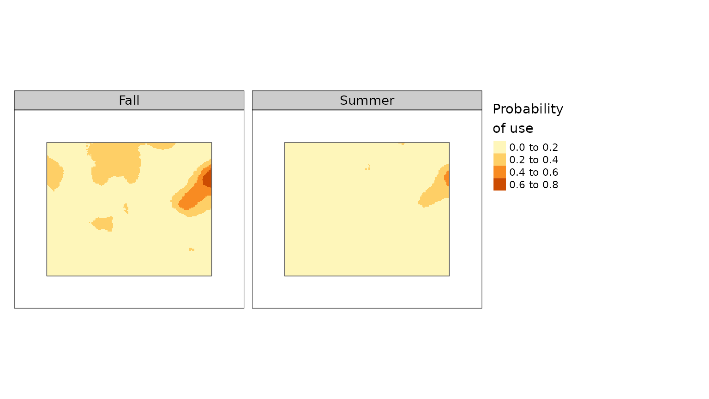

Getting started
Getting_started.RmdIntroduction
The caribouMetrics R package contains a set of functions which implement the caribou resource selection probability functions (RSPF) described in Hornseth and Rempel (2016) and an implementation of the population and demographic models described in Johnson et. al. (2020) and ECCC (2011). These functions allow users to calculate metrics of disturbance, predict demographic rates for a given level of disturbance and simulate population growth over time.
This vignette provides an overview of how to use the caribouMetrics package. There are more detailed vignettes available for the caribouHabitat function (vignette("caribouHabitat", package = "caribouMetrics")) and for the demographic models (vignette("caribouDemography", package = "caribouMetrics")).
Data Needed
Several different data sets are used in the RSPF model to describe conditions that affect caribou habitat selection. The data includes types of forest, wetlands, eskers, linear features and disturbance histories. The table below describes each data set, and what it is used for.
| Name (Argument) | Description | Purpose |
|---|---|---|
| Land cover (landCover) | A raster of land cover classified into 7 forest or wetland resource types | Covariates in RSPF model |
| Eskers (esker) | A raster or sf object identifying eskers (deposited ridges of sediment), if presented as a raster data must be in m/ha | Covariate in RSPF model |
| Linear features (linFeat) | a raster, sf object, or list of these identifying the location of linear features (e.g. roads, rail), if presented as a raster data must be in m/ha | Covariate in RSPF model |
| Natural disturbance (natDist) | Cumulative natural disturbance (mostly fire) over the past 30 years | Covariate in RSPF model and used to set forest classes in grid cell to 0 if > 35% disturbed |
| Anthropogenic disturbance (anthroDist) | Presence of anthropogenic disturbance | Used to set forest classes in grid cell to 0 if > 35% disturbed |
| Project polygon (projPoly) | An sf object containing polygon(s) of the study area(s), must contain a Range column | Used to set the boundaries of the analysis and link range-specific coefficients to spatial data |
caribouHabitat()
caribouHabitat is the function used to run the RSPF model. It takes the input data and uses the coefficients described by Hornseth and Rempel (2016) to calculate the probability of habitat use by caribou in each season at each location. The function can be run for a single range or a list of ranges simultaneously. In addition to the arguments listed in the table above the caribouRange is also needed. caribouRange is a character or data frame identifying the caribou range and corresponding coefficients to use when generating the RSPF. It must contain a Range column with the name of the geographical area and is used to link the table to the projectPoly polygons and a coefRange column with the name of the caribou range that the coefficients should be used from. Generally Range and coefRange will be the same.
knitr::opts_chunk$set(warning = FALSE)
library(caribouMetrics)
library(dplyr)
#>
#> Attaching package: 'dplyr'
#> The following objects are masked from 'package:stats':
#>
#> filter, lag
#> The following objects are masked from 'package:base':
#>
#> intersect, setdiff, setequal, union
library(raster)
#> Loading required package: sp
#>
#> Attaching package: 'raster'
#> The following object is masked from 'package:dplyr':
#>
#> select
library(sf)
#> Linking to GEOS 3.8.0, GDAL 3.0.4, PROJ 6.3.1
library(ggplot2)Example Data
An example data set taken from part of the Nipigon caribou range in Ontario is provided with the package. It uses the provincial land cover classes to determine the landCover. As the RSPF is generated using a set of specific resource classes which may not match those of standard land-cover classes there is a re-classing function (reclassPLC) which uses a look-up table to convert Ontario provincial land cover classes into the correct resource classes to use in the RSPF model. Disturbance data sets can be converted from polygons of year of disturbance or time since disturbance using (reclassDist). In the example fire data with polygons containing year of disturbance are converted to a presence absence raster of cumulative disturbance over the past 30 years.
# load data sets
pth_base <- system.file("extdata", package = "caribouMetrics")
caribouRanges <- c("Pagwachuan", "Missisa", "Nipigon", "James Bay")
landCover <- raster(file.path(pth_base, "landCover.tif")) %>%
reclassPLC()
esker <- read_sf(file.path(pth_base, "esker.shp"))
linFeat <- list(roads = read_sf(file.path(pth_base,
"roads.shp")),
rail = read_sf(file.path(pth_base, "rail.shp")),
utilities = read_sf(file.path(pth_base, "utilities.shp")))
natDist <- sf::st_read(file.path(pth_base, "fireAFFES2020.shp")) %>%
reclassDist(endYr = 2020, numCumYrs = 30, template = landCover,
dateField = "FIRE_YEAR")
#> Reading layer `fireAFFES2020' from data source
#> `/home/runner/work/_temp/Library/caribouMetrics/extdata/fireAFFES2020.shp'
#> using driver `ESRI Shapefile'
#> Simple feature collection with 9 features and 15 fields
#> Geometry type: MULTIPOLYGON
#> Dimension: XY
#> Bounding box: xmin: 686844.2 ymin: 12562360 xmax: 768557.3 ymax: 12629940
#> Projected CRS: MNR_Lambert_Conformal_Conic
anthroDist <- raster(file.path(pth_base, "anthroDist.tif"))
# make a polygon inside the bounding box of the rasters
singlePoly <- (raster::extent(landCover) - 30000) %>% st_bbox() %>%
st_as_sfc() %>% st_as_sf() %>% st_set_crs(st_crs(landCover))Single Range
The most basic method is to supply a single character vector for caribouRange and one polygon for the project area.
carHab1 <- caribouHabitat(
landCover = landCover,
esker = esker,
linFeat = linFeat,
natDist = natDist,
anthroDist = anthroDist,
projectPoly = singlePoly,
caribouRange = "Nipigon",
padProjPoly = TRUE
)
#> cropping landCover to extent of projectPoly
#> cropping natDist to extent of projectPoly
#> cropping anthroDist to extent of projectPoly
#> cropping esker to extent of projectPoly
#> old-style crs object detected; please recreate object with a recent sf::st_crs()
#> cropping linFeat to extent of projectPoly
#> old-style crs object detected; please recreate object with a recent sf::st_crs()
#> Applying moving window.The caribouHabitat function returns an S4 object with the class CaribouHabitat. To access a RasterStack object with a layer for each covariate in the RSPF model and the predictions for each season use the results function.
str(carHab1, max.level = 2, give.attr = FALSE)
#> Formal class 'CaribouHabitat' [package "caribouMetrics"] with 9 slots
#> ..@ landCover :Formal class 'RasterLayer' [package "raster"] with 12 slots
#> ..@ esker :Formal class 'RasterLayer' [package "raster"] with 12 slots
#> ..@ natDist :Formal class 'RasterLayer' [package "raster"] with 12 slots
#> ..@ anthroDist :Formal class 'RasterLayer' [package "raster"] with 12 slots
#> ..@ linFeat :Formal class 'RasterLayer' [package "raster"] with 12 slots
#> ..@ projectPoly :Classes 'sf' and 'data.frame': 1 obs. of 2 variables:
#> ..@ processedData:Formal class 'RasterBrick' [package "raster"] with 12 slots
#> ..@ habitatUse :Formal class 'RasterBrick' [package "raster"] with 12 slots
#> ..@ attributes :List of 5
results(carHab1)
#> class : RasterStack
#> dimensions : 183, 212, 38796, 17 (nrow, ncol, ncell, nlayers)
#> resolution : 400, 400 (x, y)
#> extent : 684188, 768988, 12565405, 12638605 (xmin, xmax, ymin, ymax)
#> crs : +proj=lcc +lat_0=0 +lon_0=-85 +lat_1=44.5 +lat_2=53.5 +x_0=930000 +y_0=6430000 +datum=NAD83 +units=m +no_defs
#> names : Fall, Spring, Summer, Winter, CON, DEC, DTN, LGOP, LGTP, LGW, MIX, ST, other, TDENLF, ESK, ...
#> min values : 1.016601e-04, 8.982073e-05, 9.830580e-04, 2.397027e-02, 0.000000e+00, 0.000000e+00, 0.000000e+00, 0.000000e+00, 0.000000e+00, 9.737119e-03, 0.000000e+00, 0.000000e+00, 0.000000e+00, 0.000000e+00, 0.000000e+00, ...
#> max values : 0.75371971, 0.66838190, 0.49350898, 0.36179434, 0.66632667, 0.22591658, 0.33947774, 0.05509639, 0.22309148, 1.00000000, 0.68773221, 0.15617596, 0.20638626, 20.00729057, 1.71055030, ...You can create a plot of the results directly from the CaribouHabitat object. If tmap is installed it will be used to make a plot, if not plot.raster will be used. You can provide the season(s) you wish to display and additional arguments that will be passed on to either qtm or plot.raster.
plot(carHab1, season = c("Fall", "Summer"))
#> Registered S3 methods overwritten by 'stars':
#> method from
#> st_bbox.SpatRaster sf
#> st_crs.SpatRaster sf
Multi-Range
caribouHabitat can also be run over multiple ranges simultaneously. For multiple ranges to be run the caribouRanges argument must be a data frame with two columns, Range indicating the name of the caribou range (must match projectPoly) and coefRange indicating the matching range coefficients as derived by Hornseth and Rempel (2016). It is possible to run the function with range coefficients swapped between ranges but this is not recommended as the models were trained separately on each range. For our example we have split the area of our data set into four polygons and arbitrarily assigned them caribou range names to demonstrate the difference in predictions depending on the coefficients associated with that range.
# split the area into 4 polygons
corners <- rbind(st_coordinates(singlePoly)[1:4,1:2],
st_centroid(singlePoly) %>% st_coordinates())
projectPoly <- st_sf(Range = caribouRanges,
geometry = st_sfc(st_polygon(list(corners[c(1,2,5, 1),])),
st_polygon(list(corners[c(2,3,5, 2),])),
st_polygon(list(corners[c(3,4,5, 3),])),
st_polygon(list(corners[c(4,1,5, 4),])))) %>%
st_set_crs(st_crs(singlePoly))
plot(projectPoly, key.pos = 1)
caribouRange <- data.frame(Range = caribouRanges,
coefRange = caribouRanges,
stringsAsFactors = FALSE)
MultRange <- caribouHabitat(landCover = landCover,
esker = esker,
linFeat = linFeat,
natDist = natDist,
anthroDist = anthroDist,
projectPoly = projectPoly,
caribouRange = caribouRange,
padProjPoly = TRUE)
#> cropping landCover to extent of projectPoly
#> cropping natDist to extent of projectPoly
#> cropping anthroDist to extent of projectPoly
#> cropping esker to extent of projectPoly
#> old-style crs object detected; please recreate object with a recent sf::st_crs()
#> cropping linFeat to extent of projectPoly
#> old-style crs object detected; please recreate object with a recent sf::st_crs()
#> Applying moving window.
#> cropping landCover to extent of projectPoly
#> cropping natDist to extent of projectPoly
#> cropping anthroDist to extent of projectPoly
#> cropping esker to extent of projectPoly
#> old-style crs object detected; please recreate object with a recent sf::st_crs()
#> cropping linFeat to extent of projectPoly
#> old-style crs object detected; please recreate object with a recent sf::st_crs()
#> Applying moving window.The same S4 object as that created by a single range run is produced, allowing the same type of interrogation of the results.
str(MultRange, max.level = 2, give.attr = FALSE)
#> Formal class 'CaribouHabitat' [package "caribouMetrics"] with 9 slots
#> ..@ landCover :Formal class 'RasterLayer' [package "raster"] with 12 slots
#> ..@ esker :Formal class 'RasterLayer' [package "raster"] with 12 slots
#> ..@ natDist :Formal class 'RasterLayer' [package "raster"] with 12 slots
#> ..@ anthroDist :Formal class 'RasterLayer' [package "raster"] with 12 slots
#> ..@ linFeat :Formal class 'RasterLayer' [package "raster"] with 12 slots
#> ..@ projectPoly :Classes 'sf' and 'data.frame': 4 obs. of 2 variables:
#> ..@ processedData:Formal class 'RasterBrick' [package "raster"] with 12 slots
#> ..@ habitatUse :Formal class 'RasterBrick' [package "raster"] with 12 slots
#> ..@ attributes :List of 5
results(MultRange)
#> class : RasterStack
#> dimensions : 198, 227, 44946, 17 (nrow, ncol, ncell, nlayers)
#> resolution : 400, 400 (x, y)
#> extent : 681188, 771988, 12562405, 12641605 (xmin, xmax, ymin, ymax)
#> crs : +proj=lcc +lat_0=0 +lon_0=-85 +lat_1=44.5 +lat_2=53.5 +x_0=930000 +y_0=6430000 +datum=NAD83 +units=m +no_defs
#> names : Fall, Spring, Summer, Winter, CON, DEC, DTN, LGOP, LGTP, LGW, MIX, ST, other, TDENLF, ESK, ...
#> min values : 7.935259e-50, 0.000000e+00, 0.000000e+00, 2.105618e-245, 0.000000e+00, 0.000000e+00, 0.000000e+00, 0.000000e+00, 0.000000e+00, 1.337890e-02, 9.552293e-04, 0.000000e+00, 0.000000e+00, 0.000000e+00, 0.000000e+00, ...
#> max values : 0.47129329, 0.67091042, 0.94184896, 0.99397098, 0.66955135, 0.17173101, 0.23284212, 0.03633134, 0.17216422, 0.99712162, 0.70017525, 0.15172801, 0.20388714, 18.22733964, 1.70658955, ...
plot(MultRange, season = c("Winter", "Spring"))
disturbanceMetrics()
The disturbanceMetrics() function is used to calculate the metrics described in Table 52 of Environment Canada Scientific Assessment to Inform the Identification of Critical Habitat for Woodland Caribou (Rangifer tarandus caribou), Boreal Population, in Canada 2011 Update. The metrics included are: * Fire: % non-overlapping fire * Anthro: % non-overlapping anthropogenic disturbance * Total_dist: % total non-overlapping fire and anthropogenic disturbance * fire_excl_anthro: % fire not overlapping with anthropogenic disturbance
disturbanceMetrics() is run in a similar manner to caribouHabitat and uses a subset of the same inputs, these are landCover, linFeat, natDist, and projectPoly.
disturb <- disturbanceMetrics(landCover = landCover,
linFeat = linFeat,
natDist = natDist,
projectPoly = singlePoly)
#> cropping linFeat to extent of landCover
#> cropping landCover to extent of projectPoly
#> cropping natDist to extent of projectPoly
#> buffering anthropogenic disturbance
#> calculating disturbance metricsThe disturbanceMetrics function returns an S4 object with the class DisturbanceMetrics. To access a data.frame with one column per metric use the results function.
str(disturb, max.level = 2, give.attr = FALSE)
#> Formal class 'DisturbanceMetrics' [package "caribouMetrics"] with 8 slots
#> ..@ landCover :Formal class 'RasterLayer' [package "raster"] with 12 slots
#> ..@ natDist :Formal class 'RasterLayer' [package "raster"] with 12 slots
#> ..@ anthroDist :Formal class 'RasterLayer' [package "raster"] with 12 slots
#> ..@ linFeat :List of 1
#> ..@ projectPoly :Classes 'sf' and 'data.frame': 1 obs. of 1 variable:
#> ..@ processedData :Formal class 'RasterBrick' [package "raster"] with 12 slots
#> ..@ disturbanceMetrics:'data.frame': 1 obs. of 5 variables:
#> ..@ attributes :List of 3
results(disturb)
#> zone Anthro Fire Total_dist fire_excl_anthro
#> 1 1 43.93089 0.7708216 44.28643 0.3555401Demographic Models
Another feature of caribouMetrics is an implementation of the population dynamics models in Science to inform policy: linking population dynamics to habitat for a threatened species in Canada by Johnson et. al. (2020) and the “Environment Canada Scientific Assessment to Inform the Identification of Critical Habitat for Woodland Caribou (Rangifer tarandus caribou), Boreal Population, in Canada 2011 Update” report. demographicCoefficients() selects coefficients for the chosen model and then samples them for each replicate. demographicRates() samples expected survival or recruitment rates based on samples of coefficient values and optionally the model precision. These are wrapper functions what use sensible defaults but lower level functions are also available.
demCoefs <- demographicCoefficients(replicates = 10)
# Compare the current conditions to a scenario with 10% more anthropogenic
# disturbance
exTable <- bind_rows(results(disturb),
results(disturb) %>%
mutate(Anthro = Anthro + 10,
Total_dist = Total_dist + 10))
demRates <- demographicRates(covTable = exTable,
popGrowthPars = demCoefs)
#> Elapsed time for caribou prediction for femaleSurvival for Johnson:: 0.019 sec elapsed
#> Elapsed time for caribou prediction for recruitment for Johnson:: 0.004 sec elapsed
ggplot(demRates, aes(Anthro, S_bar))+
geom_point()+
geom_errorbar(aes(ymin = S_PIlow, ymax = S_PIhigh), width = 0.1)+
scale_y_continuous(breaks = 5:10/10, limits = c(0.5,1))+
xlab("Anthropogenic Disturbance (%)")+
ylab("Adult Female Survival")+
theme_bw()Finally, we can model population growth using popGrowthJohnson() which is an implementation of the 2-stage population growth model used in Johnson et al. (2020) but with some differences described in Dyson et al. (in Prep).
popGrow <- popGrowthJohnson(N = c(2000, 2000), numSteps = 20,
R_bar = demRates$R_bar,
S_bar = demRates$S_bar)
cbind(demRates[,1:5], popGrow)
#> zone Anthro Fire Total_dist fire_excl_anthro N lambda
#> 1 1 43.93089 0.7708216 44.28643 0.3555401 283 0.9070183
#> 2 1 53.93089 0.7708216 54.28643 0.3555401 230 0.8976092For additional details on functions in the package see the help documentation
References
ECCC. 2011. Scientific assessment to inform the identification of critical habitat for woodland caribou (Rangifer tarandus caribou), boreal population, in Canada. Canadian Wildlife Service, Ottawa. http://epe.lac-bac.gc.ca/100/200/301/environment_can/2011/scientific_assessment_inform-ef/CW66-296-2011-eng.pdf. Accessed 26 Mar 2021.
Johnson, C.A., Sutherland, G.D., Neave, E., Leblond, M., Kirby, P., Superbie, C. and McLoughlin, P.D., 2020. Science to inform policy: linking population dynamics to habitat for a threatened species in Canada. Journal of Applied Ecology, 57(7), pp.1314-1327. https://besjournals.onlinelibrary.wiley.com/doi/full/10.1111/1365-2664.13637
Hornseth, M.L. and Rempel, R.S., 2016. Seasonal resource selection of woodland caribou (Rangifer tarandus caribou) across a gradient of anthropogenic disturbance. Canadian Journal of Zoology, 94(2), pp.79-93. https://doi.org/10.1139/cjz-2015-0101